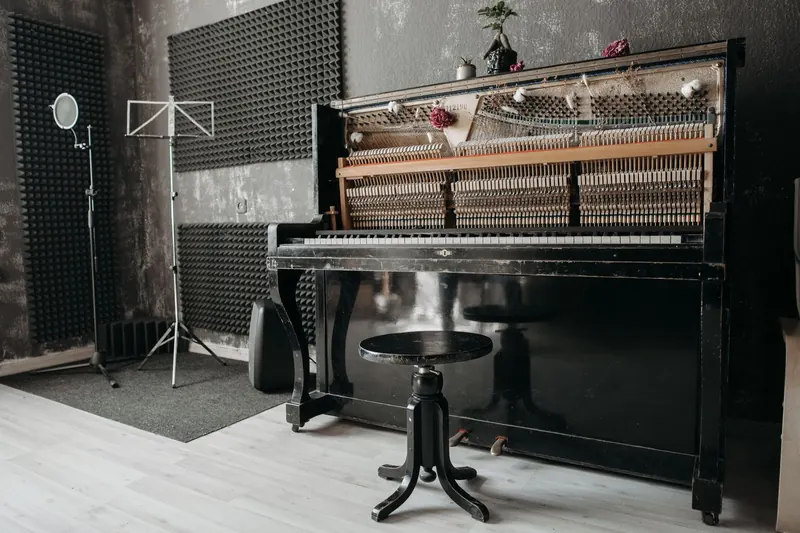

Quick Answers
How much quieter does insulation make a wall?
A few STC points. In NAIMA's full-scale tests of 2x4 walls, cavities filled with fiberglass, mineral wool or open cell foam scored STC 33 to 34. The Gypsum Association puts the gain from any insulation in a wood stud wall at about 2 to 4 points over an empty cavity.
What actually blocks sound between rooms?
Decoupling, mass and sealing. Resilient channel that separates drywall from the studs, a second layer of gypsum, and sealed gaps at outlets, doors and the floor line do most of the work. One manufacturer's test of a 2x4 wall with resilient channels, mineral wool and Type X gypsum reached STC 45.
Is spray foam good for soundproofing?
Open cell foam blocks sound about as well as fiberglass in a wall, and closed cell does slightly worse. In the NAIMA tests, open cell filling a 2x4 cavity scored STC 33 and closed cell scored STC 31. Foam's real help with noise is sealing the small air gaps that sound slips through.
When It Makes Sense
- A bedroom on the side of the house that faces a busy road.
- A home office sharing a wall with the kitchen, den or a kid's room.
- A home theater or media room where the movie should stay in the room.
- A shared wall in a duplex, townhome or condo.
- A floor between levels where voices and TV carry from below.
- A bathroom wall next to a bedroom, where plumbing noise comes through.
Insulation is cheapest to add while walls or ceilings are open, so a remodel or new build is the best moment.
How Soundproofing Insulation Works
Walls are compared by STC, sound transmission class: the higher the number, the less airborne sound gets through. NAIMA notes that a difference of 3 STC points or less sits at the edge of what people notice, which is why the insulation type matters less than most people expect.

Find the sound path
We check back-to-back outlets, door gaps, shared ductwork, recessed lights and the joint where wall meets floor, since sound follows any opening.
Fill the cavity
Open walls get unfaced mineral wool or fiberglass batts, or open cell foam. Finished walls can take injection foam through small holes.
Seal the gaps
We seal outlet boxes, penetrations and drywall edges we can reach with acoustic sealant or foam.
Plan for decoupling and mass
Resilient channel and extra gypsum are drywall work, usually done by your drywall installer, and they give the large gains. We plan the insulation around them.
| 2x4 wood stud wall | Cavity fill | STC |
|---|---|---|
| NAIMA test wall | R-13 fiberglass | 33 |
| NAIMA test wall | R-15 mineral wool | 34 |
| NAIMA test wall | Open cell foam, full cavity | 33 |
| NAIMA test wall | Closed cell foam, full cavity | 31 |
| One manufacturer, resilient channels and Type X gypsum | Mineral wool | 45 |
| One injection foam manufacturer's sheet | Injection foam | 41 |
The jump from 33 to 45 came from the channels and the heavier drywall, not the insulation. In steel stud walls the Gypsum Association reports fiberglass and mineral wool scoring 8 to 10 points above spray foam, so we lean toward fiber in metal framing. Open cell lists NRC 0.70 at 3 inches on one sheet, a measure of absorption that matters inside a room more than in a wall.
Soundproofing Cost in Knoxville
Cost depends on how many walls and ceilings are involved, whether they are open, how many drywall layers go back on, and whether doors need upgrading.
| Source | Item | Range |
|---|---|---|
| HomeAdvisor, 2025 | Existing room | $10 to $30 per sq ft |
| HomeAdvisor, 2025 | New construction | $12 to $25 per sq ft |
| Soundproofing supplier guide, May 2026 | Walls | $4 to $14 per sq ft |
| Soundproofing supplier guide, May 2026 | Ceilings | $6 to $16 per sq ft |
| Soundproofing supplier guide, May 2026 | Floors | $2 to $6 per sq ft |
Both sources are national guides checked in October 2026, and neither reflects our prices. A single 12 by 8 foot shared wall is 96 square feet, so the supplier guide's wall range puts it near $384 to $1,344. The batts themselves are the small part of that, at $0.30 to $1.50 per square foot in Fixr's January 2026 guide. Our pricing guide covers other insulation jobs.
Tell us which room bothers you most. Call (865) 564-7823 for a free estimate.
Noise and East Tennessee Homes
Noise problems here follow the housing. AirDNA counted almost 17,000 short-term rental units in the Gatlinburg and Pigeon Forge area in April 2023, more than half of them cabins, where bedrooms often sit close to shared living space. In West Knoxville's 37923 ZIP, about half the homes are apartments, condos and townhomes, so a shared wall comes with the address.
Traffic and aircraft matter too. I-40 and I-75 form most of Farragut's northern edge, and McGhee Tyson Airport in Alcoa also hosts an Air National Guard refueling wing.
If the loud wall is an exterior wall, it likely needs insulation for energy anyway. Tennessee's code calls for R-13 in a wood frame wall, and TVA EnergyRight lists a $300 wall insulation rebate through its Quality Contractor Network.
What the Free Estimate Includes
- A walk through the room to find where the sound gets in.
- A check of whether the walls or ceiling are open, finished or due for drywall.
- Honest expectations for what insulation alone will change.
- A written price for the insulation and sealing we would do.
Soundproofing Insulation FAQ
Related Services
- Injection foam insulation: fills finished walls through small holes.
- Open cell spray foam: seals and fills open walls and ceilings in one pass.
- Fiberglass batt insulation: unfaced batts for interior walls and floors.
Where We Do This Most
- West Knoxville: condos and townhomes with shared walls.
- Bearden: homes close to the busy Kingston Pike retail corridor.
- Alcoa: neighborhoods near McGhee Tyson Airport.
- Farragut: homes along the I-40 and I-75 corridor.
- Gatlinburg: cabins and condos used as overnight rentals.
Ask About a Quieter Room
We will tell you what insulation can fix and what it cannot. Call (865) 564-7823 or use the form for a free estimate.